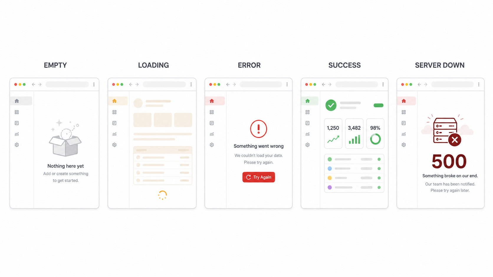
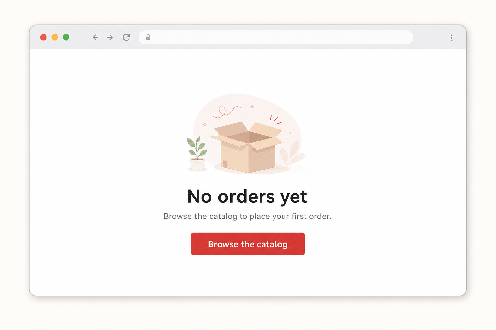

Most student apps only design the happy path. Real apps explain what is happening when there is no data, slow data, or bad data.
Blank pages appear when there is no data.
Loading feels like the site froze.
Errors blame the user or give no next step.
State design is one of the fastest ways to make a student app feel finished.
Invites action — what can happen next.
Skeletons and spinners keep confidence.
What went wrong and what to try.
Confirm the result, don’t annoy.
A human 500 page, not a stack trace.
The empty state is often the first experience — a good one can teach the app.

Empty cart → “Browse the catalog.”
Failed save → retry and keep the form data.
No posts → “Start the first discussion.”
Recovery actions should be visible — not hidden in a console log.
Every state should be testable — can you trigger it on demand?

Empty invites · Loading reassures · Error recovers · Success confirms · 500 stays human.